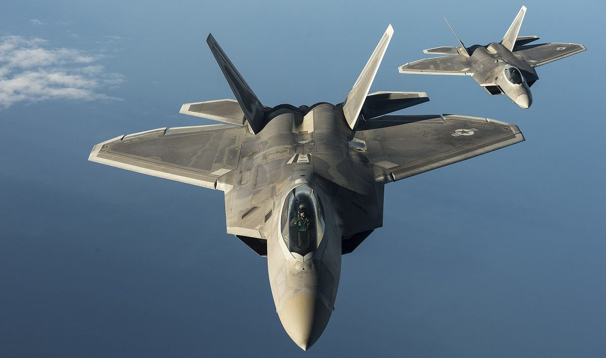

f-22 Raptor

O Lockheed Martin F-22 Raptor, é um caça de dominação aérea fabricado nos Estados Unidos, pela Lockheed Martin. Foi o primeiro caça de quinta geração a entrar em serviço. Sua missão principal é manter a superioridade aérea no campo de batalha, mas também possui capacidade secundária de ataque ao solo.
O alto custo do programa de desenvolvimento da aeronave (US$ 66,7 bilhões de dólares), atrasos no desenvolvimento do programa de caças de quinta geração russos e chinês, a proibição de exportações e o desenvolvimento do mais versátil F-35 acabaram por encerrar o programa de produção do F-22. Hoje a força aérea americana possui 187 aeronaves destas no serviço ativo, sendo que o último F-22 foi entregue em 2012.
Como arma secundária, o F-22 utiliza um canhão M61A2 Vulcan de 20mm com 480 projéteis. Já no armamento principal, o Raptor pode ser armado com dois mísseis ar-ar de curto alcance AIM-9 e até seis mísseis ar-ar de médio e longo alcances AIM-120 AMRAAMs. Para o combate ar-solo, o F-22 pode ser armado com duas bombas de 1 000 libras GBU-32 JDAMs e dois mísseis AIM-120.
proximo